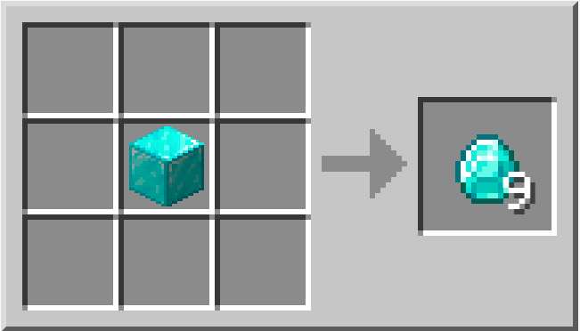

Diamante
| Nome | Diamante |
|---|---|
| Id | 264 |
| Tipo | Item |
| Raritá | Comune |
| Rinnovabile | No |
| Impilabile | Si(64) |
I diamanti sono gemme che sono rilasciate quando il diamante grezzo viene estratto. Il diamante è considerato uno degli oggetti che valgono di più nel gioco a causa della loro scarsità e del loro uso come materiale di fabbricazione. La grafica è anche uno dei tanti simboli e icone usati per Minecraft.
Estrazione
Il diamante grezzo può essere trovato nei livelli 1-16, in piccole vene di 1-8 minerali, raramente doppie vene si incrociano permettendo 9-10 minerali, e può essere estratto solamente usando un piccone di ferro o superiore.
Fabbricazione
Il blocco di diamante puó essere fabbricato con 9 diamanti e poi puó essere riconvertito in diamanti posizionandolo in uno qualsiasi degli slot della griglia di crafting.
Presenza in natura
I diamanti possono essere trovati raramente in bauli generati naturalmente, come quelli trovati in un villaggio, un tempio del deserto, una miniera abbandonata, un tempio della giungla, o una fortezza del Nether.
Ingrediente nella fabbricazione
Il diamante è la quinta fila della fabbricazione degli strumenti, incluso l'oro, e la quinta fila dell'armatura inclusa la maglia. Gli strumenti e l'armatura fatti di diamanti sono i secondi (dopo la netherite) più durevoli nel gioco, e sono i terzi più efficienti dopo la netherite e l'oro, anche se questo ha una durabilità molto bassa. I picconi di diamante e netherite sono gli unici picconi che possono estrarre l'ossidiana.